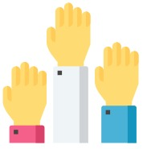
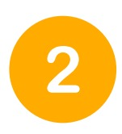
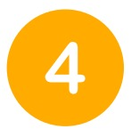
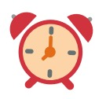
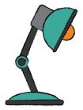
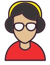
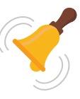
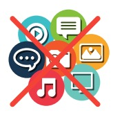
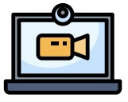

Boas práticas para o estudo on-line
Netiqueta
O termo se refere às regras básicas que norteiam a boa convivência entre os sujeitos na internet. O objetivo aqui é estabelecer alguns parâmetros capazes de facilitar a comunicação entre professores e estudantes no ambiente virtual de ensino e aprendizagem (AVEA) e na internet.
Nada de gritos! Sabe aquela sensação desagradável de conversar com alguém que só fala gritando? Na internet isso também acontece quando alguém escreve EM CAIXA ALTA. Por isso, evite usar a caixa alta, optando pelo negrito ou sublinhado quando quiser destacar algo em seu texto.
Vá com calma! Faça pausas ao expor suas ideias. Não se esqueça de pontuar frases ao enviar mensagens e/ou comentários. Sempre que possível, revise seu texto a fim de evitar erros gramaticais e/ou ortográficos. Isso facilitará a compreensão por parte do seu leitor, tornando o diálogo mais eficiente e objetivo.
Lembre-se, menos é mais! Textos muito coloridos, com muita alternância de fontes e tamanhos das letras pode se tornar um incômodo para o seu leitor(a). Para quebrar a monotonia, desmembre textos grandes em blocos menores, utilize espaços em branco entre os parágrafos, seja objetivo.
Impessoalidade na medida certa. Mesmo o AVEA sendo um espaço formal, o uso moderado de expressões idiomáticas, emoticons e até mesmo gírias podem tornar o diálogo mais leve, além de trazer sutileza a determinada sentença. O excesso de formalidade tende a causar distanciamento e ser interpretado como frieza e antipatia.
Recomendações gerais para aulas on-line
Seja pontual! Para isso, faça seu login com antecedência mínima de 15 (quinze) minutos e verifique o bom funcionamento dos recursos que serão utilizados (computador ou outro dispositivo, conexão à internet, câmera, microfone).
Apresentação pessoal: Para a escolha da roupa adequada, tenha como parâmetro aquelas que utilizava nos encontros presenciais. Vista-se por completo e não use pijama!
Sempre que possível, escolha ambientes claros (porém, evite ficar de costas para janelas com excesso de claridade), neutros e, de preferência, fechados. Atente-se para o que está em segundo plano (atrás de você).
Microfone: Deixar o microfone mudo/desligado. Quando alguém está falando, os demais devem deixar o microfone no modo silencioso para evitar interferência.
Câmera: O ideal é que se mantenha a câmera ligada para que todos possam se ver. Em tempos de distanciamento, poder ver os demais colegas reforça a sensação de pertencimento e engajamento. Mas se você não estiver em condições de aparecer, desligue a câmera, evitando constrangimentos.
Fones de ouvido: A utilização dos fones para as aulas online evita ruídos de microfonia e ainda isola sons externos, contribuindo para o foco do estudante no conteúdo da aula.
 Atente-se ao tempo de fala do outro e evite realizar interrupções! Sempre que o professor ou o colega terminar de falar, por conta do delay (atraso na comunicação), aguarde um pouquinho antes de iniciar a sua fala, certifique-se que o raciocínio foi concluído!
Evite os famosos lanchinhos durante a aula on-line. Assim como nos encontros presenciais, pode incomodar os demais participantes além de desviar o seu foco na atividade principal. E mascar chicletes? Nem pensar!
Evite ficar olhando rede sociais e outros aplicativos durante as aulas on-line, evite distrações! Lembre-se de que este momento de encontro ao vivo tornou-se precioso para o seu processo de aprendizagem. Aproveite-o ao máximo!
A aula terminou? Certifique-se de que não continua sendo gravado ou ouvido, desabilitando câmera e microfone.
 Voltar